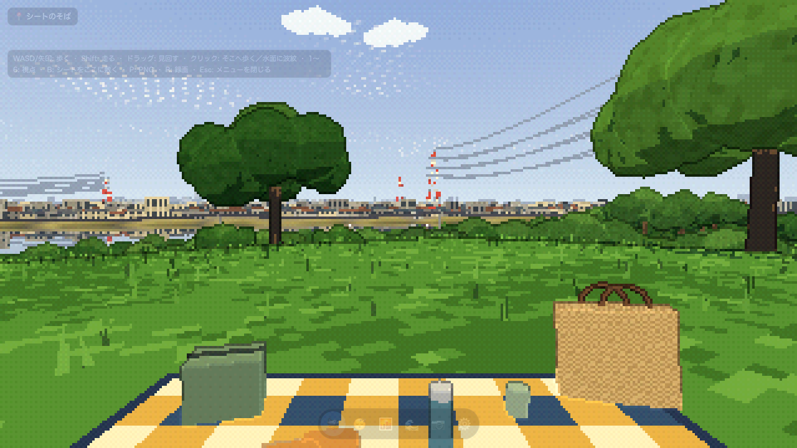
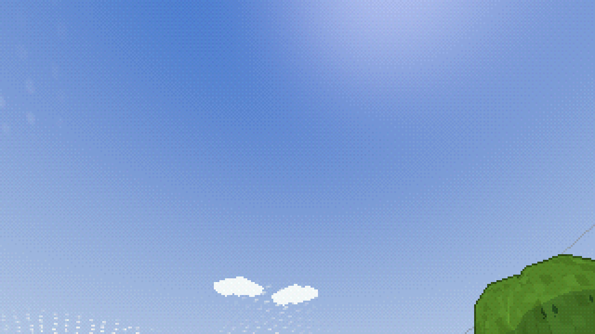
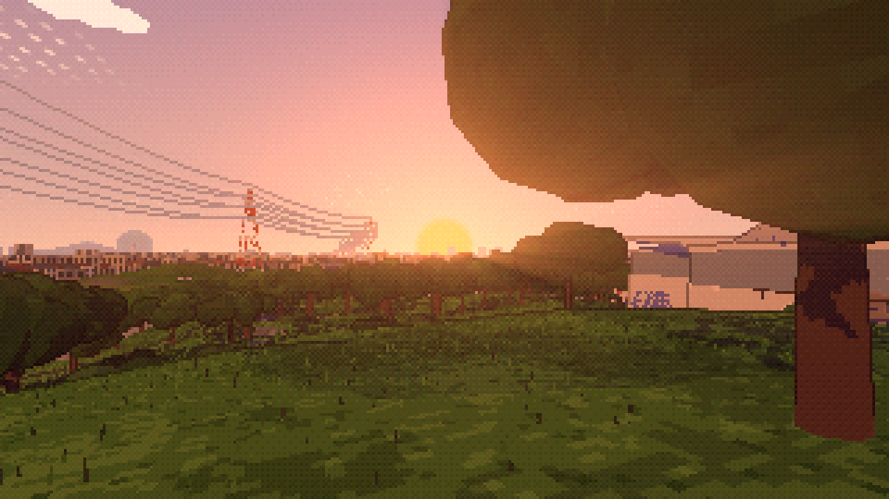
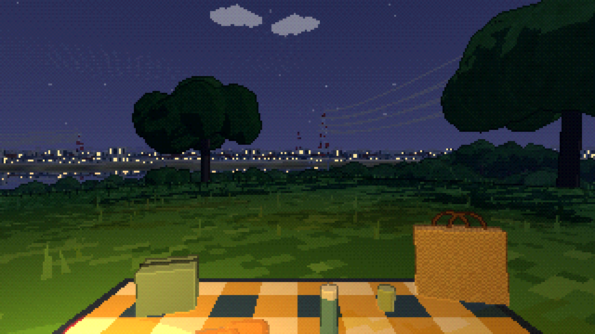
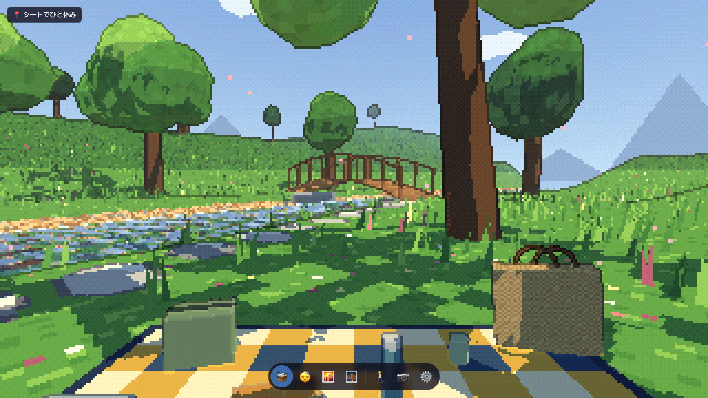
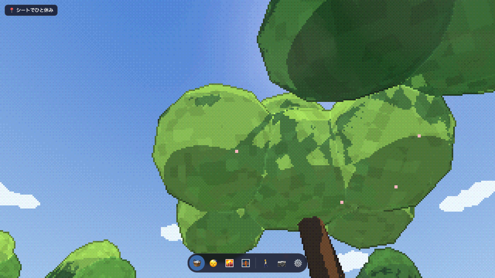
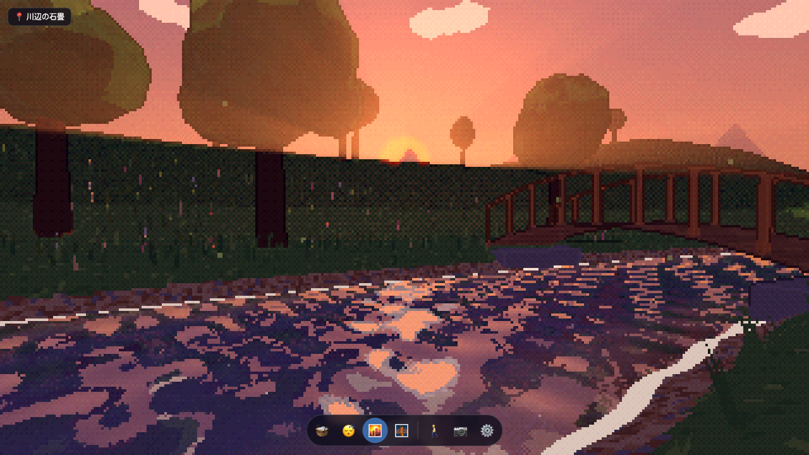
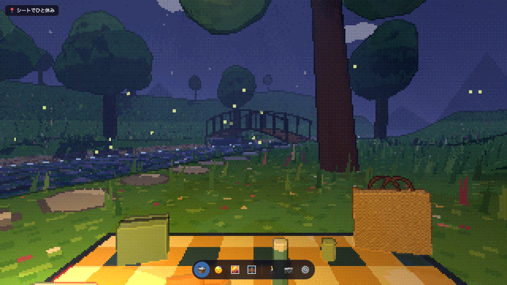
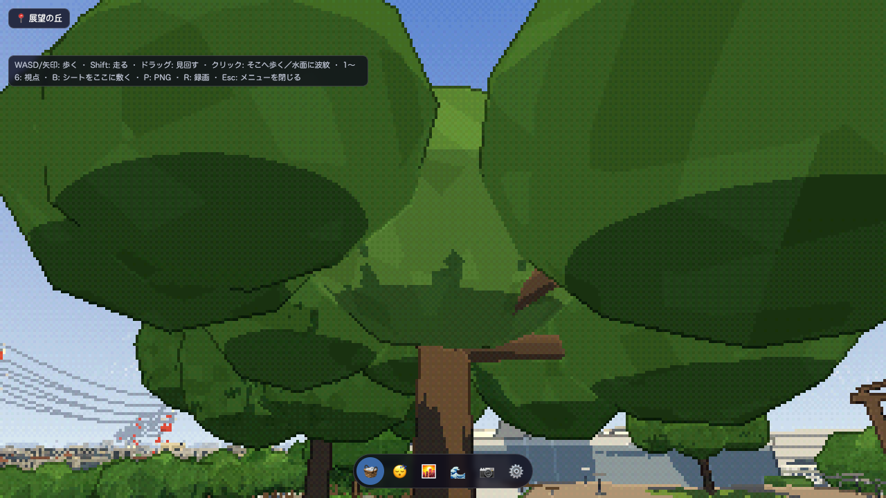
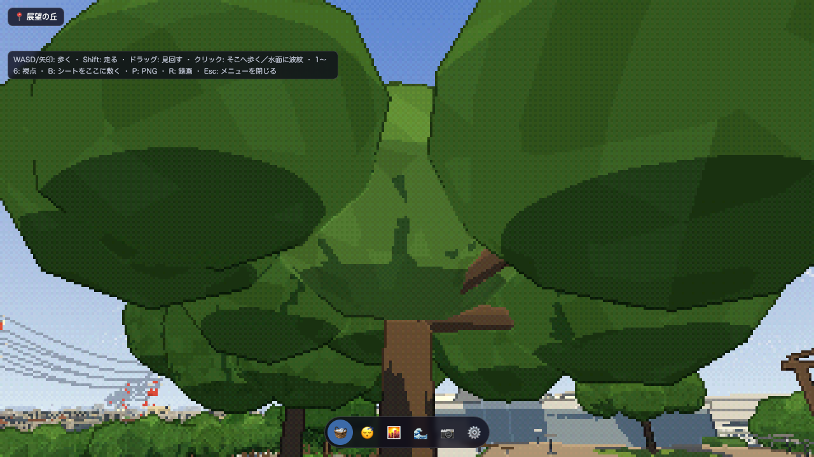

なぎさ：昼


更新：なぎさ・picnicの画面効果は旧方式へ切戻し、木漏れ日の改善を保持しています。 なぎさの原因比較 ／ picnicの原因比較・切戻し後 ／ 分析資料
2026-10-24／夏・同一視点・320×180描画。画像は最終版のafterと、改修前のbefore。見上げ画像は空が主体のため、樹冠の補足画像も参照。
改修方針 ／ 詳細設計・測定条件と制限 ／ 変更前測定 ／ 変更後測定 ／ 現在のブラウザ回帰結果 ／ 切戻し後なぎさの回帰結果

















MediaRecorderによる保存確認用。実時間での録画のため、フレーム数と端点の一致は別の検証結果を参照。